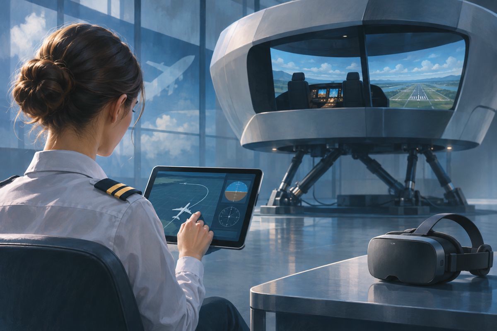

항공 기술 / EXPLAINED
조종사 교육도 플랫폼으로, Skywise가 훈련 도구를 모은다
MATe·VPT·Flight eLearning을 Skywise에 통합한다. 가상 조종석은 실제 비행 전에 절차를 익히는 학습 공간으로 쓰인다.

누가 무엇을 발표했나
Airbus의 디지털 서비스 회사 Skywise가 11월 2일 조종사 교육 솔루션을 포트폴리오에 통합한다고 밝혔다. 항공 운항에는 조종뿐 아니라 정비·계획·지상 업무와 교육까지 여러 정보 흐름이 있다. 이번 소식은 그중 교육 도구와 접근 관리를 한 플랫폼 안에서 다루려는 움직임이다.
태블릿 학습과 가상 조종석
발표에 포함된 MATe Suite는 기체 시스템 학습을, VPT는 가상 환경에서 절차를 익히는 훈련을 지원한다. Flight eLearning도 함께 통합된다. 여기서 절차 훈련은 단순히 화면 속 비행기를 조종하는 게임과 다르다. 어떤 상황에서 어떤 순서로 확인하고 행동해야 하는지 반복해서 익히는 교육에 가깝다.
실제 훈련을 어떻게 보완하나
편집부 분석으로는 반복 학습의 접근성이 관건이다. 학습자가 조종석 배치와 절차를 미리 익히면 제한된 훈련 시간을 질문과 실습에 더 집중할 여지가 있다. 하지만 플랫폼 통합 발표만으로 실제 교육 효과나 안전 성과가 검증됐다고 말할 수는 없다. 교육 과정의 승인과 평가, 교관의 지도는 별도로 중요하다.
이번 변화의 범위
발표일은 11월 2일이며 모든 항공사의 교육 과정이 그날 즉시 바뀐다는 뜻은 아니다. 운영자는 계약 조건, 사용자 이전, 기종별 콘텐츠와 기존 교육 체계의 연결을 확인해야 한다. 승객에게는 눈에 보이지 않는 서비스지만, 항공의 디지털화가 기내 화면 밖에서 진행되고 있다는 사례로 읽을 수 있다.